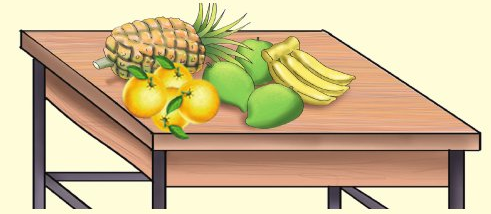
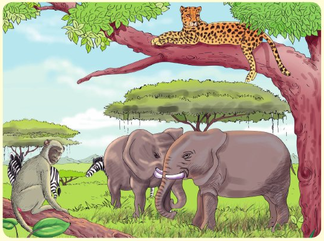

Zoezi la kumi
Tazama na chunguza picha hizi kisha jibu maswali yanayofuata kwa
kila picha.
Andika jibu kwa mkono katika sehemu hii.
Picha ya matunda

1. Andika majina ya matunda yaliyopo juu ya meza.
Andika jibu kwa mkono katika sehemu hii.
2. Chora picha za matunda yaliyopo mezani.
Andika jibu kwa mkono katika sehemu hii.
3. Andika herufi ya kwanza ya kila tunda.
Mfano wa kuangalia
Andika jibu kwa mkono katika sehemu hii.
Picha ya wanyama
